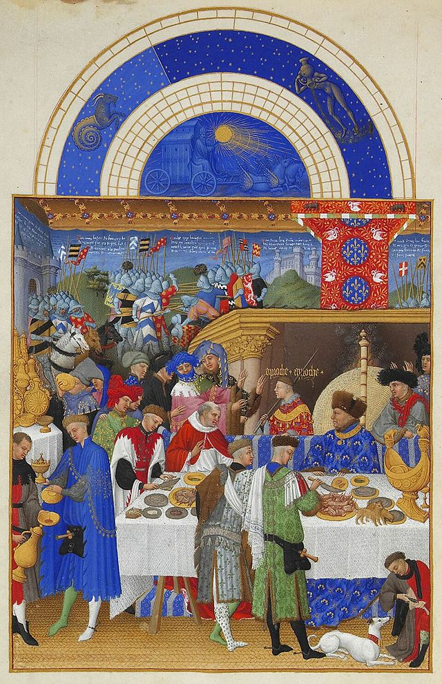
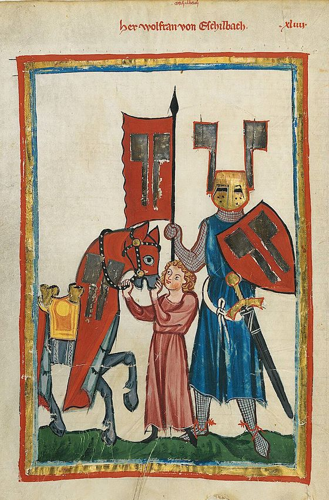
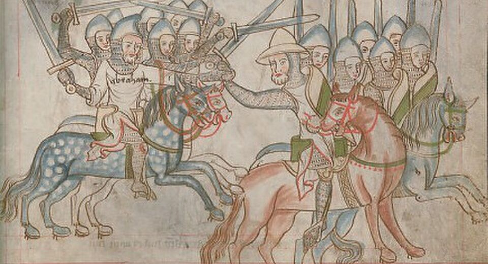
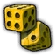

Per bode bezorgd
Een proclamatie
Aan de edele gast, alhierNiet te openen vóór het lezen van dit opschrift.

Wij, Han en Nele van Kessel-Lo, groeten allen die dit lezen. Het jaar onzes Heren tweeduizend zesentwintig loopt ten einde, en dat zal niet ongemerkt gebeuren. Op oudejaarsdag openen wij onze poort voor een gastmaal in de geest van het koninkrijk Bohemen, anno 1403: met stoofpot en bier, met zwaard en boog, en met dobbelstenen die vermoedelijk verzwaard zijn.
Kom gekleed naar uw stand. Ridder of rover, monnik of molenaarsdochter, kruidenvrouw of kroegbaas: alles mag, behalve een spijkerbroek zonder schaamte. Wie geen harnas heeft, redt het met een cape, een riem en een vastberaden blik.
Er wordt gestreden om eer, gegeten tot de riem knelt, en om middernacht luiden wij het nieuwe jaar in.
Wie Kingdom Come nooit heeft gespeeld: geen nood. Het zijn gewoon de middeleeuwen, maar dan met snacks.
Gegeven onder ons zegel te Kessel-Lo, ten jare MMXXVIHan & Nele
Verkleden verplicht · fantasie toegestaan
Kies uw stand
In Bohemen weet iedereen wie u bent aan wat u draagt. Kies uw stand, dan fluisteren wij wat u kunt aantrekken. Een ridder zonder wapenschild is maar een man in een gordijn, dus ernaast ontwerpt u meteen het uwe.

Borduur, plak of schilder het op uw tuniek of schild.
Het verloop van de avond · onder voorbehoud
De getijden
Een getijdenboek verdeelt de dag in heilige uren. Wij doen hetzelfde, maar dan met oliebollen. De uren staan ook als ruitjes op de klok bovenaan.
Ridderspelen · voor jong en oud
Het toernooi

Op het erf wordt om eer gestreden, bij het laatste daglicht. Geen echte zwaarden en geen echte paarden, maar wel echte roem.
- Het zwaardgevecht. Zacht van schuim, hard van wil. Meesteraanvallen toegestaan. Wie verliest, ligt erbij als Hendrik na zijn eerste gevecht met Runt.
- Boogschieten. Zonder vizier, zoals het hoort. Oefen hiernaast.
- Dobbelen om groschen. Zes stenen, één kans, geen genade. Verzwaarde stenen van de Duivel worden in beslag genomen.
- Kennis van het rijk. Wie weet het meest over Bohemen, bier en boerenwijsheid?

Houd ingedrukt om te spannen, laat los om te schieten. Vijf pijlen.
In elke fatsoenlijke herberg
Dobbelen met Hans

Zes stenen, wie eerst 2000 punten heeft, wint. Kies na elke worp de stenen die punten opleveren en gooi de rest opnieuw. Gooit u niets wat punten oplevert, dan bent u alles van die beurt kwijt. Stop dus op tijd. Hans Capon speelt mee, en Hans verliest niet graag.
Puntentelling
Een 1 is 100, een 5 is 50. Drie gelijke: 100 × de waarde (drie enen: 1000). Elke extra gelijke steen verdubbelt dat. 1-2-3-4-5 is 500, 2-3-4-5-6 is 750, 1 tot en met 6 is 1500. Liggen alle zes stenen opzij, dan gooit u opnieuw met zes.
Riddersnacks · samen gedekt
De dis

Een gastmaal zoals in de herberg van Kuttenberg: de waard zorgt voor de ketel, de gasten voor de rest van de dis. Draai een kaart om.
Han of Nele zorgen voor de grote ketel en de oliebollen. De rest komt van u: neem iets te eten of te drinken mee, en laat even weten wat. Dan staan er straks geen zeven potten linzen.
Voor wie liever geen raadsels leest
Wat, wanneer, waar
- Wanneer
- Donderdag 31 december 2026, vanaf 16:00 tot ver na middernacht
- Waar
- Kessel-Lo
Niet op schaal, en ook niet helemaal op de juiste plek. Tik op een icoon, of veeg om de kaart te verschuiven. - Dresscode
- Middeleeuws, Boheems of iets wat daar vaag op lijkt. Een cape, een riem en een houten beker doen wonderen.
- Kinderen
- Vervoer
- Te voet, per fiets, per trein of te paard. Wie naar zijn paard fluit: reken op tien minuten voor het door het struikgewas komt aanzetten.
- Opslaan
- Er is geen autosave. Wie wil opslaan, drinkt om middernacht een Heilandsbrandewijn.
- Meenemen
- Uw wapen (op stof, karton of hart), goede zin, en iets te eten of te drinken voor de gedeelde dis. Vastenspijs is welkom: dan kan iedereen ervan eten.
- Aanmelden
- Laat Han of Nele weten of u komt. Een duif, een bode of een berichtje volstaat.